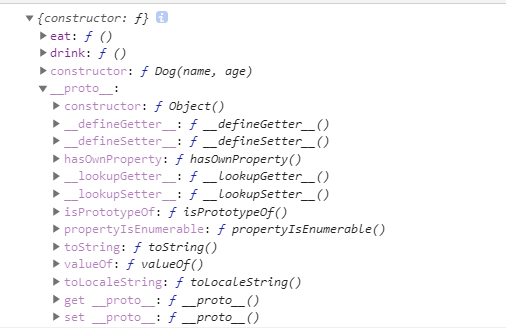

因为离职的原因，最近一直在复习以前的面试基础知识，碰巧之前对原型的理解其实只有个大概，对这里面的知识不是完全的理解，所以写这篇文章来总结一下。(主要是面试的时候，肚子里有墨水，但是不知道如何表达)
什么是原型
其实总结原型主要是下面三个方面：
- 构造函数拥有一个prototype属性，指向构造函数的原型对面，原型对象的construtor指向构造函数本身
- 实例对象拥有一个
__proto__属性 - 实例对象的
__proto__指向的是构造函数的prototype属性
下面开始写代码来验证：
构造函数拥有prototype属性
1 | |
这里我写了一个名为Dog的函数，并在原型上定义了两个方法，分别为eat和drink方法。那么输出Dog的prototype对象是怎么样的呢？

可以看到，Dog的prototype的属性里有我刚才定义的两个方法而且还有一个construtor属性以及__proto__。此时看construtor明显的是指向
Dog函数本身，展开__proto__属性时，可以看到这里有更多的属性，同时可以看到construtor指向的是Object，很明显的可以出，函数Dog的构造函数是Object。
这里不得不提一嘴，JS本身是提供了很多的原生构造函数，它们分别是下面几种：
- Object
- Number
- String
- Boolean
- RegExp
- Error
- Function
- Array
- Date
那么说这个有什么用呢？第一个当然是为了说明为什么上面的Dog函数的__proto__的construtor会指向Object，第二个就是看下面例子：
1 | |
将上面代码复制输出后，你会看到String和Number构造函数，之所以会看到，其实是JS的一种隐式转换，访问一些特殊属性的时候，JS内部会转化，上述代码实则可以到成下面的转化：
1 | |
那么再回到Dog函数，接下来。加入以下代码：
1 | |
经过上述的几个例子，其实都可以基本的说明的原型的三个特点。
什么是原型链
所谓的原型链就是实例化对象的__proto__指向构造函数的prototype，然后构造函数的__proto__指向他的构造函数。以上面的例子就是下面的关系图：
原型链就是这种指向的关系，这种关系的指向一般最高的是构造函数Object，而构造函数Object的__proto__是null。
值得注意的一点是Function的prototype是一个函数，但是Function的prototype的prototype是没有的，即是undefined
原型的作用(继承)
说了那么多，那么原型到底有什么用呢？让我们再回到Dog函数，我实例化了一个dog对象，那么执行下面的代码：
1 | |
很明显，我并没有dog对象中定义到这两个函数，那么它是怎么找到这个方法而且去执行的呢？其实就是原型链的作用，JS在执行这代码的时候，会在dog对象中找，找不到的时候就会跟随着dog的__proto__去找，直到找不到为止，就会报错。很明显我们是可以直到dog的__proto__是等于构造函数Dog的prototype的，所以之前在Dog函数定义的两个方法，只要是用构造函数Dog实例化的对象都是可以使用的。
试着输出下面的代码：
1 | |
很明显实例化对象dog继承了构造函数Dog的prototype上的方法，那么这个时候可以去探究另外一个问题了，函数怎么继承另外一个函数的方法呢？
借助call或apply函数
先实现下面的代码：
1 | |
接下来我们要实现Son函数继承Father函数，如下：
1 | |
这样写的话，可以继承在Father函数上定义的东西，但是如果没有在Father函数上定义的东西就不能继承，就比如Father原型链上的其他属性或者方法都不能继承。
原型链上的继承
1 | |
使用上其实没有什么问题，但是由于是将Son函数的原型赋值到实例化Father的对象，所以会出现到一个问题：
1 | |
因为是共用一个对象，所以Son函数实例化的对象实际上都是共用了一个Father函数实例化的对象。
解决办法如下：
1 | |
这种办法就是组合继承办法，当然这不是最好的，因为是直接赋值的Father的prototype，所以Son函数的construtor会指向的是Father函数。所以需要优化一下.
1 | |
至于Object.create的用法参考MDN的用法介绍。
总结
基本上原型、原型链以及原型继承基本就是这些东西，说难的其实不难，更多是理解。